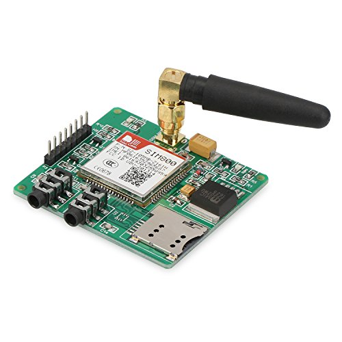

Design¶
The 4onse-mod station is composed by the following units:
- Sensor unit: it comprises the sensors that will observe the physical properties to retrieve measures in time.
- Control unit: it is the main box hosting the microprocessor and the tranceiver that enable the sensor readings and communication toward the data server.
- Power unit: it is responsible of providing power supply to the control and the sensor units (both solar or power adapter systems).
- Pole: it permits the physical deployment in the field of all the above units.
Sensor unit components¶
The sensor unit is composed by all the external sensors which monitor the main environmental parameters.
The DS18B20 togheter with the BME280 are placed inside a solar shield (according to the WMO dispositions) to provide temperature, humidity and pressure data.
The rain gauge, wind speed and direction are plug and play sensors. They only need to be mounted on the pool and then plugged.
Control unit¶
The control unit is placed in a BOX which should be water and dust proof. Inside the box a board in plexiglass will act as support for the different Control devices
The front and back hookup schema are depicted in the images below.
 |
|
|---|---|
| Front hookup | Back hookup |
The following table lists all the components that are to be mounted on a plexi board inside the box .
| # | Sensor name | Photo |
|---|---|---|
| 1 | Arduino Mega 2560 |  |
| 2 | SIM800 |  |
| 3 | Step-down |  |
| 4 | OpenLog |  |
| 5 | DS3231 |  |
| 6 | DHT11 |  |
| 7 | LM393 |  |
The #1 is the Arduino board which is the main component. It is placed in the center of the plexi board to ease the connections with the other components.
The #2 is the GPRS SIM800 module. It enables data transfer by mobile internet through an encrypted protocol transmission (HTTPS).
The #3 are the Step-down converter modules. They are used to linearly convert the power supply from 12 Volts to 5 and 7 Volts thanks to the LM2596 regulator. The 5 Volts current is used to power the internal and external components and the 7 Volts to power the Arduino board; this according to the datasheets of each components. They are mounted on the back side of the plexi.
The #4 is the OpenLog which works as a datalogger.
The #5 is the RTC. It is synchronized using an NTP server and it provides the right timestamp to the weather station observations.
The #6 is the DHT11. It has the function to monitor the temperature and humidity inside the box container.
The #7 is the Adapter for soil moisture sensor, it has a built-in potentiometer for sensitivity adjustment of the digital output.
Power unit¶
The weather station requires 12 Volts to work properly. It is provided either by:
- a power supply adapter
- or a solar power unit
If the solar power unit is selected, we suggest to use a:
- 30W Solar Panel (~ 50 USD)
- 12V, 22Ah rechargeable battery (~ 40 USD)
- Solar charger/regulator (~ 15 USD)
Pole¶
The pole must guarantee solidity and should accomodate some basic position requirements of the sensors indicated by best practices and guidelines (e.g.: WMO).
Suburban weather station¶
| Sensor | Altitude | Location (suggestions) |
|---|---|---|
| Temperature/humidity | from 1.7 to 2 m | A green field at least 10 meters away from any kind of obstacle (buildings, trees, etc.) |
| Pluviometer | from 1.5 to 2 m | 10 meters away from any kind of obstacle which can prevent the rain to fall inside the bucket |
| Solar radiation | 2 m | At the top of the pole, pay attention to possible shadows which can make shade on the sensor |
| Anemometer | 2/2.5 m | At the top of the pole and at least 10 meters away from possible obstacles |

{kind=link}
{kind=link}